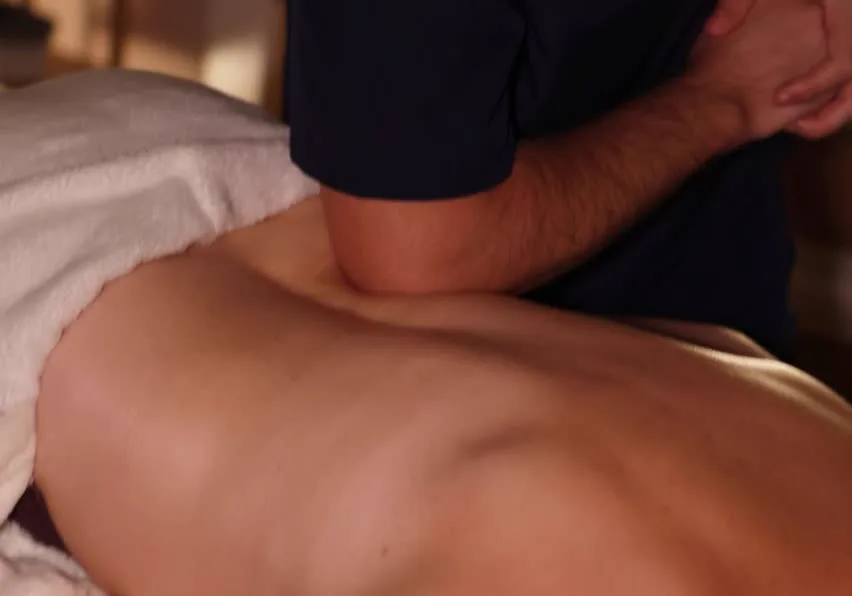

Masaże ciała · Poznań
Konkretna praca z napięciem: masaż sportowy po treningu, masaż pleców i karku po tygodniu przy biurku albo masaż tkanek głębokich, gdy to samo miejsce boli od miesięcy. Studio na Jeżycach, ul. Zeylanda 3.

Masaż dla mężczyzn w Poznaniu
Mężczyźni najczęściej przychodzą do nas z jednym z trzech powodów: po treningu, z bolącymi plecami po pracy albo z napięciem, które nie odpuszcza od dawna. Każdemu z nich odpowiada inny masaż - i lepiej dobrać go do problemu niż do tego, co brzmi najmocniej.
Skupia się na partiach obciążonych wysiłkiem: łydkach i udach po bieganiu, barkach po siłowni czy basenie. Pracujemy mocniej niż przy masażu relaksacyjnym, ale nacisk trzymamy na granicy komfortu. Masaż sportowy trwa 60, 80 lub 90 minut.
Krótszy i skupiony na górnej części ciała: kark, barki, łopatki i odcinek piersiowy. Dobry wybór, gdy brakuje czasu na pełny masaż, a napięcie siedzi głównie w karku. Masaż pleców trwa 30, 45 lub 60 minut; jest też sam masaż karku (30 minut) i karku z głową (40 minut).
Wolna, precyzyjna praca na głębszych warstwach mięśni i powięzi. Ma sens przy napięciach, które wracają od miesięcy i nie ustępują po zwykłym rozluźnieniu. Masaż tkanek głębokich trwa od 40 do 90 minut.
Nie wiesz, który wybrać? Zaznacz w formularzu „Nie wiem - proszę o doradztwo” albo napisz na WhatsAppie, co Ci dokucza - dobierzemy zabieg i długość.
Czas trwania i cena
| Masaż | Czas i cena | Kiedy wybrać | |
|---|---|---|---|
| Masaż sportowy | 60 min - 190 zł 80 min - 240 zł 90 min - 270 zł | Regeneracja po treningu, przygotowanie do zawodów | Rezerwacja |
| Masaż pleców | 30 min - 90 zł 45 min - 130 zł 60 min - 170 zł | Kark, barki i plecy po pracy przy komputerze | Rezerwacja |
| Masaż karku / karku + głowa | 30 min - 90 zł 40 min - 120 zł | Szybka ulga dla karku, napięciowy ból głowy | Rezerwacja |
| Masaż tkanek głębokich | 40 min - 140 zł 60 min - 200 zł 80 min - 250 zł 90 min - 280 zł | Uporczywe, nawracające napięcia | Rezerwacja |
| Masaż biurowy | 50 min - 140 zł | Kark i barki w przerwie od pracy | Rezerwacja |
Pełna lista masaży, w tym masaż zdrowotny całego ciała i masaż relaksacyjny, jest w cenniku.
Przeciwwskazania
Mocniejszej pracy nie robimy przy gorączce i infekcji, świeżych urazach i złamaniach, zakrzepicy, chorobach skóry w fazie zaostrzenia ani przy ostrym bólu promieniującym do nogi lub ręki. Przy dyskopatii i po urazach sportowych najpierw porozmawiaj z lekarzem lub fizjoterapeutą - więcej piszemy w artykule Masaż przy dyskopatii i bólu kręgosłupa.
FAQ
Tak, siłę nacisku dobieramy do Ciebie i korygujemy w trakcie. Mocny nie znaczy jednak bolesny - jeśli wstrzymujesz oddech albo napinasz mięśnie w obronie, praca przestaje działać. Wtedy wystarczy powiedzieć, a zmienimy tempo.
Na kark, barki i odcinek piersiowy najczęściej wystarcza masaż pleców i karku (30-60 minut). Jeśli napięcie wraca od miesięcy, lepszy będzie masaż tkanek głębokich, a jeśli boli całe ciało - masaż zdrowotny całego ciała.
Wystarczy przyjść kilka minut wcześniej. Ręczniki i olejki zapewniamy, a do masażu rozbierasz się do bielizny i leżysz przykryty ręcznikiem - odsłaniamy tylko tę partię, nad którą akurat pracujemy.
Tak. Przy regularnych treningach dobrym rytmem jest jedna wizyta co dwa-trzy tygodnie, a w okresie przygotowań do zawodów częściej. Przed samym startem zostaw co najmniej dwa dni odstępu od mocnego masażu.
Rezerwacja online
Wybierz zabieg i termin - odezwiemy się, żeby go potwierdzić.
Używamy niezbędnych plików cookies, żeby strona działała. Za Twoją zgodą chcemy też korzystać z Google Analytics, żeby wiedzieć, które podstrony są przydatne. Wybór możesz zmienić w każdej chwili. Szczegóły w polityce prywatności.
Potrzebne do działania strony i zapamiętania Twojego wyboru. Nie można ich wyłączyć.
Google Analytics - zagregowane statystyki odwiedzin. Domyślnie wyłączone.